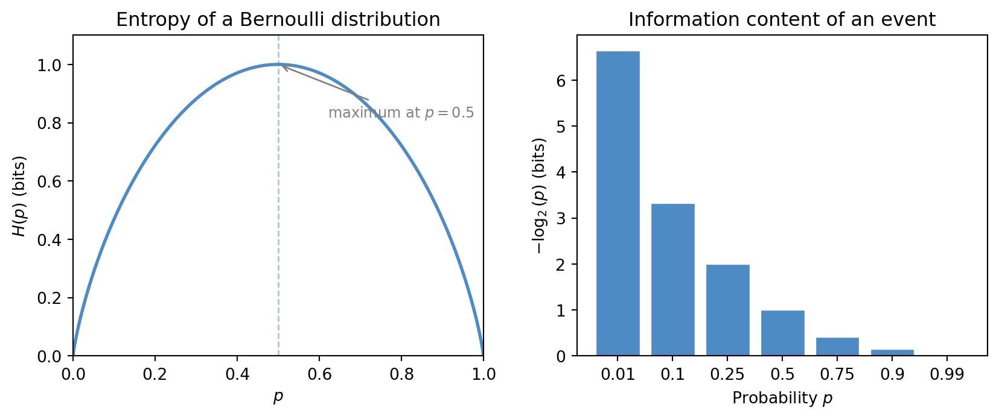
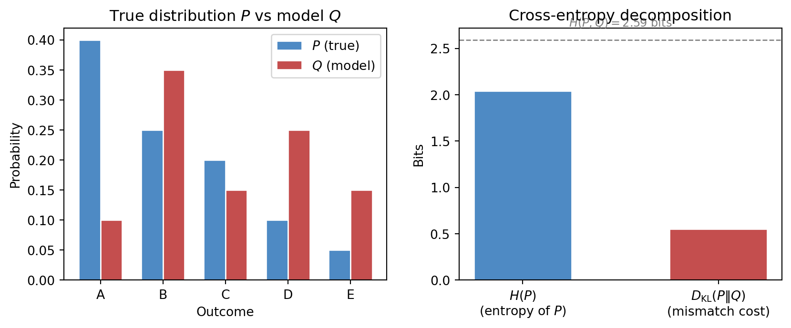
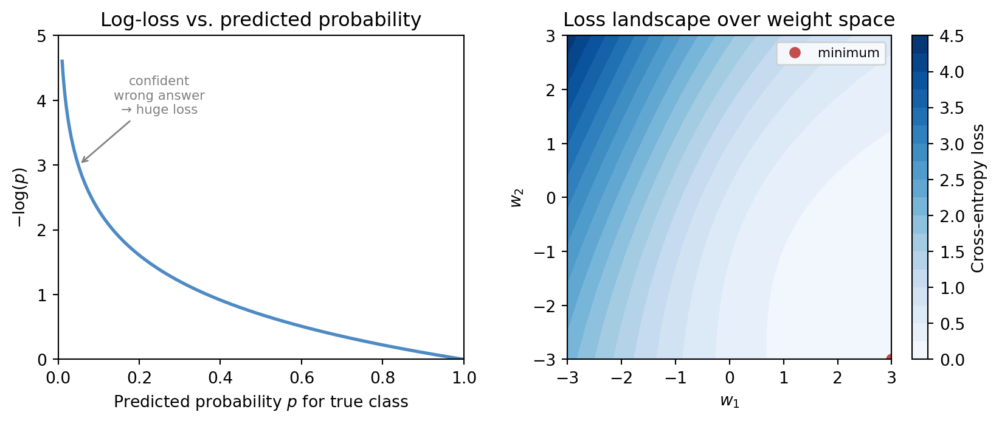

9 Information Theory and Learning Objectives
Probability gives us a language for uncertainty. Information theory sharpens that language by asking how uncertainty should be measured and how much surprise is carried by an observation. In machine learning, this matters because many of the most important objective functions are really information-theoretic quantities in disguise.
This chapter supplies one of the missing bridges between classical mathematics and modern ML practice. It explains why entropy, cross-entropy, and divergence appear so often, and why classification losses look the way they do.
9.1 Prerequisite anchors
The strongest backward links are:
vol-04/01-exponents-logarithms.qmdvol-06/01-probability-theory.qmdvol-06/02-distributions.qmdvol-07/probability/01-probability-theory.qmd
9.2 Information and surprise
An event that was nearly certain carries little surprise when it occurs. An event that was thought unlikely carries much more. Information theory turns that intuition into mathematics.
One convenient measure of surprise is related to the logarithm of probability. The smaller the probability assigned to the observed event, the larger the surprise. This is one reason logarithms, already familiar from growth and scale, return here in a new role.
The important point is not just formal. A learning system is often judged by how much probability it assigns to what actually happens. If it repeatedly treats the truth as improbable, it is learning poorly.
9.3 Entropy as uncertainty
Entropy measures the average uncertainty in a probability distribution. A highly concentrated distribution has low entropy because little doubt remains about the outcome. A more spread distribution has higher entropy because the future is less predictable.
This interpretation has several lives:
- uncertainty in a random variable
- expected code length in compression
- average unpredictability in a source
For our purposes, the key lesson is that entropy gives a principled scale for discussing uncertainty rather than relying on vague qualitative language alone.
For a Bernoulli random variable with success probability p, the entropy takes a particularly clean form:
H(p) = -p \log_2 p - (1-p) \log_2(1-p).
This curve peaks at p = 0.5, where uncertainty is greatest, and falls to zero at the extremes where the outcome is certain. The figure below makes this geometry visible alongside the raw information content -\log_2(p) for individual events.
9.4 Code length and efficient description
Information theory is not only about abstract uncertainty. It is also about representation and description. If some outcomes are common and others are rare, an efficient coding system should not treat them all equally. Common events can be encoded with shorter descriptions, while rare events require longer ones.
This is one reason entropy can be read as a lower bound on efficient average code length. The link is beautiful because it joins probability, representation, and economy of description in one framework.
The same intuition reappears in learning. A good predictive model gives short descriptions to what tends to happen and long descriptions to what is genuinely surprising.
9.5 Cross-entropy as prediction penalty
Suppose the world generates outcomes according to one distribution, but our model assigns probabilities using another. Cross-entropy measures the average penalty paid when the model’s probabilities are used to describe reality.
This is why cross-entropy appears naturally as a loss for classification. If the model assigns high probability to the correct class, the penalty is small. If it assigns very low probability to the correct class, the penalty is large.
That behaviour is exactly what we want. A classifier should not merely choose the right label occasionally by accident. It should assign serious weight to the truth.
9.6 Why log loss appears
Students often meet log loss as a formula to accept on trust. Information theory makes it intelligible.
If the true class is assigned probability p, then the penalty -\log p grows slowly when p is already large and grows sharply when p is very small. This means the loss strongly punishes confident wrong predictions.
That is mathematically and practically reasonable. A model that says “I am nearly certain” and is wrong should be penalised more heavily than a model that was uncertain to begin with.
9.7 KL divergence as mismatch
Kullback-Leibler divergence measures how different one probability distribution is from another in an information-theoretic sense. It is not a geometric distance in the ordinary symmetric sense, but it is a powerful measure of mismatch.
In machine learning it appears whenever we ask how costly it is to approximate one distribution by another. This shows up in variational inference, model comparison, regularisation, and generative modelling.
The essential intuition is straightforward: if our model distribution is badly misaligned with the true structure, that mismatch has an information cost.
For distributions P and Q over the same outcomes, the cross-entropy and KL divergence are connected by the identity:
H(P, Q) = H(P) + D_{\mathrm{KL}}(P \| Q).
The cross-entropy H(P,Q) is the entropy of P plus the extra cost of using Q in place of P. The figure below illustrates this decomposition concretely.

9.8 Objectives encode beliefs about error
Earlier chapters stressed that a loss function expresses what kind of mistake matters. Information theory refines this point. Some losses are not arbitrary penalties; they arise from coherent assumptions about uncertainty and prediction.
When we use squared error, we are often aligning ourselves with one kind of noise model. When we use cross-entropy, we are aligning ourselves with a probabilistic view of classification and surprise.
This is a healthier way to read objective functions. They are not just knobs for optimisers. They are compact statements of modelling belief.
9.9 Classification and probability estimates
A classifier that outputs only labels hides important structure. A classifier that outputs class probabilities can express hesitation, ambiguity, and relative plausibility.
Information-theoretic losses reward this richer behaviour when it is honest. They prefer a model that says “class A is likely, but class B remains possible” over one that makes brittle hard decisions unsupported by the evidence.
This is one reason probabilistic classification fits naturally with uncertainty calibration from the previous chapter.
The figure below shows both sides of this point. On the left, the log-loss curve L(p) = -\log(p) demonstrates the sharp penalty for confident wrong answers. On the right, a loss landscape over a two-dimensional parameter space illustrates that the information-theoretic objective creates a genuine geometry for the optimiser to navigate.

9.10 Compression, communication, and learning
It is worth keeping sight of the broader intellectual landscape. Information theory was born in communication and coding, yet its ideas now shape learning systems because both fields are concerned with structured uncertainty and efficient representation.
A well-trained model compresses regularity. It spends little descriptive effort on what is common and much more on what is rare or unexpected. In that sense, prediction and compression are closely related acts.
9.11 A language example
Suppose a model predicts the next word in a sentence. If it assigns high probability to sensible continuations and low probability to implausible ones, its cross-entropy loss will be low. If it repeatedly treats the true next word as surprising, the loss will be high.
This example shows why information theory belongs naturally in AI. Language modelling, compression, prediction, and uncertainty all meet in the same mathematics.
9.12 Interactive exploration
The cell below lets you modify two categorical distributions P and Q directly and observe how entropy, cross-entropy, and KL divergence respond. Changing Q toward P should reduce the KL divergence to zero.
TipWhat to try
- Set
Q_VALUESequal toP_VALUESand confirm that D_{\mathrm{KL}}(P\|Q) = 0 and H(P,Q) = H(P). - Make one entry of Q very small while the corresponding entry of P is large and watch the KL divergence grow.
- Try a uniform P (all values 0.2) and observe that entropy is maximised at \log_2(5) \approx 2.32 bits.
import numpy as np
# --- Try changing these parameters ---
# Five probabilities that must sum to 1
P_VALUES = [0.40, 0.25, 0.20, 0.10, 0.05]
Q_VALUES = [0.10, 0.35, 0.15, 0.25, 0.15]
P = np.array(P_VALUES, dtype=float)
Q = np.array(Q_VALUES, dtype=float)
# Normalise in case of rounding
P = P / P.sum()
Q = Q / Q.sum()
# Entropy H(P)
H_P = -np.sum(P * np.log2(np.where(P > 0, P, 1)))
# Cross-entropy H(P, Q)
H_PQ = -np.sum(P * np.log2(np.where(Q > 0, Q, 1e-15)))
# KL divergence D_KL(P || Q)
kl = np.sum(P * np.log2(np.where((P > 0) & (Q > 0), P / Q, 1e-15) * (P > 0)))
print(f"Entropy H(P) = {H_P:.4f} bits")
print(f"Cross-entropy H(P, Q) = {H_PQ:.4f} bits")
print(f"KL divergence D(P||Q) = {kl:.4f} bits")
print()
print(f"Verification: H(P) + KL = {H_P + kl:.4f} (should equal H(P,Q) = {H_PQ:.4f})")9.13 Looking ahead
The next chapter builds neural networks from composition, gradients, and learned representations. Information theory remains in the background there too, because many modern network objectives are still based on cross-entropy, divergence, and probabilistic prediction (Cover and Thomas 2006).
For now, the key ideas to carry forward are:
- entropy measures uncertainty in a principled way
- logarithms connect surprise to probability
- cross-entropy penalises models that assign low probability to the truth
- KL divergence measures distributional mismatch
- learning objectives often encode information-theoretic assumptions
9.14 Exercises and prompts
- Why does an unlikely observed event carry more information than a very likely one?
- Explain in words why cross-entropy is a natural loss for probabilistic classification.
- Why is a confident wrong prediction penalised heavily by log loss?
- Give an example of how prediction and compression might be related in practice.
Cover, Thomas M., and Joy A. Thomas. 2006. Elements of Information Theory. 2nd ed. Wiley.